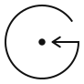

|
Abstract
A world is a finite relational structure, a state of data rather than a physical place: kinds of things, the things themselves, the facts that relate them, and the rules that make further facts follow. Grant is a small language in which every line states something about a world: a fact, a change, a definition or a question. Worlds are built on other worlds, and worlds are themselves things, so that one world can hold others and reason about them. This page gives the mathematical structure of Grant, explains how the language works, and collects what is needed to use its interpreter.
Grant rests on one act: stating. A world is made of what has been stated in it, and nothing else; its state is exactly its statements. Here is a small world.
from numbers kind team kind feeling kind person [ age: one number works_in: one team knows: person feels: feeling ] team design team engineering feeling happy person liz [ age: 27 | works_in: design ] person laurie [ age: 30 | works_in: engineering ] person harbor [ age: 24 | works_in: design | knows: liz, laurie ] harbor feels happy rule mutual: person a knows person b if b knows a ? liz.knows -- harbor ? person p works_in design -- liz, harbor ? sum harbor.knows.age -- 57
The first block declares three kinds and the shape of a person: every relation a person can have, how many values it holds, and of what kind. The second creates objects and states facts about them. The rule mutual makes further facts follow: nobody stated that liz knows harbor, and yet she does. The last three lines are questions; they change nothing and show what holds. Figure 1 draws this world.
Six principles follow from taking the act of stating seriously.
Nothing exists unless it is stated. A world starts empty. Kinds, relations and objects come into being only when they are stated, and even numbers and text must be brought in.
If it can be built, build it. The language gives only what cannot be stated from inside a world. Mutual relations, averages, time, ordered collections and merge strategies are built with the same statements as any world.
What isn't stated isn't true. A fact holds because it was stated or because a rule states that it follows; absence is falsity. Grant needs no booleans and no null.
Each world is one state. A world is its parents plus its own statements. Building on a world, or holding it, starts another world and never changes the first.
A name is not an identity. An object is what it is because of where it was stated into being. Names point at it and its index numbers it, but neither is it.
Every line is a statement. Each line reads as a sentence, and symbols appear only where they carry meaning: [ | ], :, ., ?, +, -.
Part |
Holds |
Each element is |
\(K\), kinds |
the sorts of things that exist |
a name with a shape: for each relation, how many values it holds and of what kind |
\(O\), objects |
the things themselves |
an identity with a kind, a handle and an index |
\(F\), facts |
what is stated about things |
a triple \((s, r, v)\): subject, relation, value |
\(R\), rules |
what follows, and what must never hold |
a name with a head and a condition, or a name with a forbidden pattern |
The subject \(s\) of a fact is an object, and its value \(v\) is an object or a primitive value, such as 24 or "Harbor Reed". Write \(D_k\) for the objects of kind \(k\). A shape entry r: one k on a kind \(k'\) says that \(r\) is a relation from \(D_{k'}\) to \(D_k\) and that each object has exactly one value of it. Shapes are closed: a fact whose relation is not in the shape of its subject's kind cannot be stated, and neither can a value of the wrong kind.
Facts form a set: stating the same fact twice is stating it once, and the order of statements is lost. Only the structure remains.
Remark
A rule rule n: h if c has a head \(h\), which is one fact pattern, and a condition \(c\); write it \(h \leftarrow c\). A set of rules \(R\) defines an operator on sets of facts,
where \(\sigma\) ranges over the assignments of objects and values to the variables of the rule. The derived facts \(D (F, R)\) are what the rules add to \(F\), and questions see stated and derived facts together:
Derived facts are not stored. They are recomputed whenever \(F\) or \(R\) changes, so a question halfway through a world sees it as it stands there. Conditions join fact patterns and comparisons with and, or and not. Recursion is allowed, and the iteration above reaches its limit after finitely many steps because the world is finite.
Negation and aggregates are not monotone, so they need care. Grant orders the rules in strata: a rule that reads a relation under not, or under count, sum, min or max, is evaluated only after every rule producing that relation has reached its fixed point. A rule that would depend on its own negation, or on an aggregate of itself, has no well-defined answer and is refused.
rule reach: person a can_reach person b if a knows b or (a knows person m and m can_reach b) rule lonely: person p is lonely if not p knows person q rule popular: person p is popular if count (person q knows p) > 10
A constraint never n: k x where c names a pattern that must have no matches. The words in a shape are constraints too: one says \(|r (x) | = 1\), maybe says \(|r (x) | \leqslant 1\), and some says \(|r (x) | \geqslant 1\). Constraints are checked once, on the finished structure: a world is valid when, for every one of its constraints \(c\),
Completion of the file is the checkpoint. A world may pass through states that break a constraint, as long as it does not end in one. That structure, and not the order of lines, is the world.
A world is written as a list of lines \(\ell_1, \ldots, \ell_m\), each of which is a function from worlds to worlds. A world with parents \(\mathcal{W}_1, \ldots, \mathcal{W}_p\) starts from their union and then runs its own lines:
The union is taken by identity: objects with the same origin are the same object, and kinds and rules with the same name are the same kind or rule. The union is commutative and associative, so the order of parents does not matter. A child is not a copy of its parent plus a difference: it is a set of instructions applied to whatever its parent is. When a parent changes, every world built on it is run again.
A merge never fails on its own line. Parents can disagree in three ways: their facts together break a constraint, a rule has two definitions, or a relation is declared two ways. All three are settled by the child's own lines and checked at the end of the world. Until a disputed rule is restated, it produces nothing.
Worlds are also things. Write \(H (\mathcal{W})\) for the set of worlds that a world \(\mathcal{W}\) holds. Worlds that hold no other worlds form the first level, and each level can hold the worlds of the levels below it:
In a world of level \(n + 1\) the kind world is one more kind of thing, whose objects are the worlds it holds, all from the levels below. A relation between worlds is then an ordinary fact, and rules can produce it like any other. To look inside a held world \(w\), Grant evaluates there: for every condition \(\varphi\), the condition in w: \(\varphi\) holds in \(\mathcal{W}\) exactly when \(\varphi\) holds in \(w\),
Because a world only holds worlds from lower levels, no world can hold itself, and worlds about worlds form a well-founded tower. The relationships between rosters become things to count by lifting the world they live in; no other mechanism is needed to treat relationships as objects. Branch a world, change something, compare: this is the basic move of simulation and search, and every branch is its own world.
Handles, identities and indexes do not matter: equality compares shape. A world with june in place of harbor, and everything else the same, is equal. In the language, = between two worlds is this equality.
This section goes through the language in the order in which a world is usually written. Three habits of reading help: spaces state, dots refer, ? shows. The line harbor knows liz adds a fact; harbor.knows is liz and laurie, wherever it is written; ? harbor.knows prints them.
Something is a primitive only if it cannot be created inside a finite world. Primitives live in built-in worlds, and a world gets them only by building on them: a world without from numbers has no numbers.
World |
Kind |
Holds |
numbers |
number |
exact numbers such as 24, 3.5, -2, with + - * / div mod and < > <= >= |
text |
text |
written content such as "Harbor Reed", with + to join and < > <= >= |
id |
id |
the index of every object: harbor.id is its number within its kind, and id.1 is every object numbered 1 |
Numbers are exact: 1 / 3 stays a third. Time is not a primitive; a date is a number of days, and a calendar is a world built on numbers. The kind world is built into the language. There are no booleans (truth is whether a fact exists), no null (a missing value is a missing fact) and no lists (a relation can hold any number of values).
kind team kind person [ age: one number | works_in: one team | knows: person ] never sensible_age: person p where p.age < 0 or p.age > 150
Word |
Means |
The same constraint written out |
one |
exactly one |
never n: person p where count p.r != 1 |
maybe |
zero or one |
never n: person p where count p.r > 1 |
some |
at least one |
never n: person p where count p.r = 0 |
many, or no word |
any number |
none |
Inside brackets a new line works like |. Stated and derived facts share a shape: a relation that a rule produces must be declared like any other.
An object is created with its kind and a handle. A fact is subject relation value. Brackets are a compact way to state several facts, so the two blocks below are the same world.
person harbor [ age: 24 | works_in: design | knows: liz, laurie ] person harbor harbor age 24 harbor works_in design harbor knows liz harbor knows laurie
Things must exist before they are mentioned. A bare handle works when exactly one object has it; when several do, the describes the one that is meant, and it is an error if none or several fit.
the harbor [ works_in: engineering ] knows liz the person harbor [ works_in: design ] feels happy
A dot gives every value of a relation: none, one or several. Dots chain, so harbor.knows.works_in is the teams in which everyone harbor knows works.
Operator |
Comes with |
Example |
=, != |
every kind |
harbor.works_in = design |
+ - * /, ( ) |
numbers |
(harbor.age + 1) * 2 |
div, mod |
numbers |
17 div 5 is 3, 17 mod 5 is 2 |
< > <= >= |
numbers, text |
harbor.age >= 18 |
+ |
text |
harbor.first + " " + harbor.last |
count |
everything |
count harbor.knows, count (person p feels happy) |
sum, min, max |
numbers |
sum harbor.knows.age / count harbor.knows |
* / div mod come before + -, then comparisons, then not, then and, then or. A value alone is not a line: every line states, changes, defines or shows. Missing values do not compute: harbor.age + 1 is an error if harbor has no age, while inside a condition a comparison with a missing value simply does not hold. A - written directly before a digit is a negative number, as in [ balance: -5 ].
rule calm: person p is_at peace if p feels happy rule adult: person p is adult if p.age >= 18 rule neighbours: person a is_neighbour_of person b if a.works_in = b.works_in and a != b rule lonely: person p is lonely if not p knows person q
Variables are introduced with a kind (person p) and reused by name inside the same rule. A variable first introduced inside not means there is none”: not p knows person q reads p knows nobody”. Several rules can produce the same relation, and a fact holds if any of them produces it. Flags are values: create condition adult, and then harbor is adult is a fact like any other. A long statement continues on indented lines.
Question |
Shows |
? harbor.age + 1 |
the value: 25 |
? harbor.knows |
the values: liz, laurie |
? harbor is_at peace |
yes or no |
? person p is_at peace |
every p that fits |
? person p works_in design and not p feels happy |
every p that fits |
? person a knows person b |
every pair that fits |
? in roster_a: harbor feels happy |
yes or no, inside roster_a |
A + at the start of a line adds and a - removes; the + is optional. Sentences add, brackets set: + harbor works_in engineering would give harbor two team assignments, while harbor [ works_in: engineering ] replaces every value. Inside brackets, + and - add and remove single values.
+ harbor knows robin -- adds a fact harbor [ works_in: engineering ] -- sets: engineering replaces design harbor [ knows: + robin, - liz ] -- adds one value, removes another harbor [ age: harbor.age + 1 ] -- computed once, on this line - harbor knows liz -- removes one fact - harbor knows -- removes every knows from harbor - harbor -- removes harbor and every fact touching it each person p [ age: p.age + 1 ] -- a year passes each person p where p.works_in = design [ age: p.age + 1 ] - each person p where p.age < 18 -- removes those people kind person [ + email: maybe text ] -- declares a relation, or sets how many and its kind kind person [ - email ] -- refused while any person has one - rule calm - never sensible_age
Removing only removes what was stated. If the fact still follows from a rule it stays true, and Grant says so: removed, but it still follows from rule mutual”. Removing what is not there does nothing; stating something about what is not there is an error. Rules and constraints have unique names, so writing one with an existing name replaces it. A kind cannot be removed while anything still uses it.
Each world is written in one file and is named by it: roster.grant is the world roster. The line from comes first and lists every parent; names resolve from the world's own folder, as in from rosters/roster_a.
-- assign_engineering.grant from roster harbor [ works_in: engineering ] -- both.grant from assign_engineering, assign_research harbor [ works_in: engineering ] -- settles the two assignments of the merge ? harbor.works_in -- engineering
A child inherits everything and can change any of it, including removing an inherited rule. Nothing it does reaches back into its parent. If a parent removes something a child's line points at, the child fails with an error that names the cause: harbor doesn't exist (removed in roster)”. Grant never guesses what a broken line meant. Running a world shows its own questions only.
A world relates to another world in one of two ways: it builds on it (from roster_a), or it holds it (world roster_a). Holding makes an object of kind world, the way team design makes a team. A held world cannot be changed from outside.
from numbers world roster_a world roster_b kind world [ + is_happier_than: world ] rule happier: world a is_happier_than world b if count (in a: person p feels happy) > count (in b: person p feels happy) ? roster_a is_happier_than roster_b ? in roster_a: harbor.knows ? roster_a = roster_b ? (in roster_a: harbor feels happy) and not (in roster_b: harbor feels happy)
Inside in w: the names are those of \(w\). Objects keep their identity in every world built from the one that created them, so the last question asks what changed for the same harbor.
Every statement changes \(K\), \(O\), \(F\) or \(R\) of its world, and derived facts follow after each line.
Statement |
Changes |
Effect |
from a, b |
\(K, O, F, R\) |
starts the world as the union of its parents |
kind person [ r: one k ] |
\(K\) |
adds the kind and declares its relations |
kind person [ + r: k | - s ] |
\(K\) |
declares or redeclares a relation; removes one, unless facts use it |
- kind person |
\(K\) |
removes the kind, unless anything uses it |
person harbor [ r: v ] |
\(O, F\) |
a new object with its origin, kind, handle and index; one fact per value |
harbor r v |
\(F\) |
adds the fact \((h, r, v)\), where \(h\) is harbor |
harbor [ r: v ] |
\(F\) |
removes every stated \((h, r, \cdot)\), then adds \((h, r, v)\) |
harbor [ r: + v, - w ] |
\(F\) |
adds \(v\), removes \(w\) |
each person p where c [ r: v ] |
\(F\) |
the same change on every match |
- harbor r v, - harbor r |
\(F\) |
removes the stated fact, or every stated value of \(r\) |
- harbor, - each person p where c |
\(O, F\) |
removes the objects and every fact with them as subject or value |
rule n: h if c, never n: k x where c |
\(R\) |
adds, or replaces the one named \(n\) |
- rule n, - never n |
\(R\) |
removes it |
world roster_a |
\(O\) |
an object of kind world holding the world roster_a |
? q |
nothing |
evaluates against \(M = F \cup D\) and shows the result |
An informal summary. Lowercase words are names; what a name means (kind, handle, relation, variable, world) comes from where it stands and what has been declared. There is one statement per line; an indented line continues the statement above it; -- starts a comment.
world = [ "from" world_name { "," world_name } ] { statement }
statement = kind_decl | kind_edit | "-" "kind" kind
| object | fact | set | removal | each
| rule | never | "-" "rule" name | "-" "never" name
| "world" world_name
| "?" ( condition | expr )
kind_decl = "kind" kind [ "[" field { sep field } "]" ]
kind_edit = "kind" kind "[" edit { sep edit } "]"
edit = "+" field | "-" relation
field = relation ":" [ "one" | "maybe" | "some" | "many" ] kind
object = kind handle [ values ]
fact = [ "+" ] ref relation expr
set = ref values
removal = "-" ref [ relation [ expr ] ]
each = [ "-" ] "each" kind var [ "where" condition ] [ values | relation ]
values = "[" assign { sep assign } "]"
assign = relation ":" ( expr { "," expr } | change { "," change } )
change = ( "+" | "-" ) expr
rule = "rule" name ":" kind var relation term "if" condition
never = "never" name ":" kind var "where" condition
ref = handle | "the" [ kind ] handle values
condition = item { ( "and" | "or" ) item }
item = "not" item | "(" condition ")" | "in" world_name ":" condition
| kind var
| term relation term
| expr ( "=" | "!=" | "<" | ">" | "<=" | ">=" ) expr
term = kind var | var | ref | expr
expr = number | text | ref | var | "id" "." number
| expr "." relation
| expr ( "+" | "-" | "*" | "/" | "div" | "mod" ) expr
| "count" ( expr | "(" condition ")" ) | ( "sum" | "min" | "max" ) expr
| "in" world_name ":" expr | "(" expr ")"
sep = "|" | newline
Grant stops at the first line that cannot be stated, and names the cause.
When |
Grant says |
a world name does not resolve |
no world called roster_x here |
a parent has errors |
roster has errors; fix it first |
a name is used before it is created |
design doesn't exist yet |
a name points at something a parent removed |
harbor doesn't exist (removed in roster) |
a bare handle fits several objects |
2 objects called harbor; use the |
the fits none or several |
no people match this description |
a relation is not in the kind's shape |
person has no relation favourite_colour |
a value is the wrong kind |
works_in takes a team, not a feeling |
a rule produces an undeclared relation |
person doesn't declare is_at |
a rule variable shares an object's name |
harbor is already an object |
a rule depends on its own negation or aggregate |
rule popular counts itself |
a line is only a value |
this value isn't used |
a missing value is computed with |
harbor has no age |
a constraint is broken at the end of the world |
harbor has 2 works_in (person: works_in: one team) |
a merge disagreement is left at the end |
rule calm differs between assign_engineering and assign_research; restate it |
a kind is removed while still in use |
3 people still use person |
a held world is changed |
roster_a is held, not built on; write a world from roster_a |
a world builds on or holds itself |
roster_a → batch_a → roster_a |
Grant is implemented in Rust, with no dependencies. From the folder of its source, cargo install --path . builds it and installs the command grant.
Command |
Does |
grant roster |
runs the world roster.grant and shows its questions |
grant check roster move |
runs worlds quietly and reports only errors |
grant show roster |
prints everything stated in a world, parents included |
grant watch roster |
runs the world again whenever it, or anything it builds on, changes |
grant repl roster |
states lines one at a time, on a world or from nothing |
Each question is shown with its answer beneath it.
$ grant harbor ? harbor is_at peace yes ? liz.knows harbor ? person p is_neighbour_of harbor liz
An error names the world, the line and the cause. When a parent fails, the child reports it together with the parent's own error.
error in child (child.grant, line 1): `roster` has errors; fix it first
1 | from roster
error in roster (roster.grant, line 11): `venice` doesn't exist yet
11 | harbor works_in venice
grant watch is how edits flow forward while writing: a child is a set of instructions, and it is run again on whatever its parents are now. In the REPL every line is a statement, as in a file; :check runs the end-of-world checks, :show prints what has been stated, and :save name writes the lines to name.grant.
Foundation 1 fixes the primitives. What comes next is written in Grant itself: standard worlds for time and calendars, for ordered collections, and for common constraints. They are ordinary worlds, built only from the primitives.